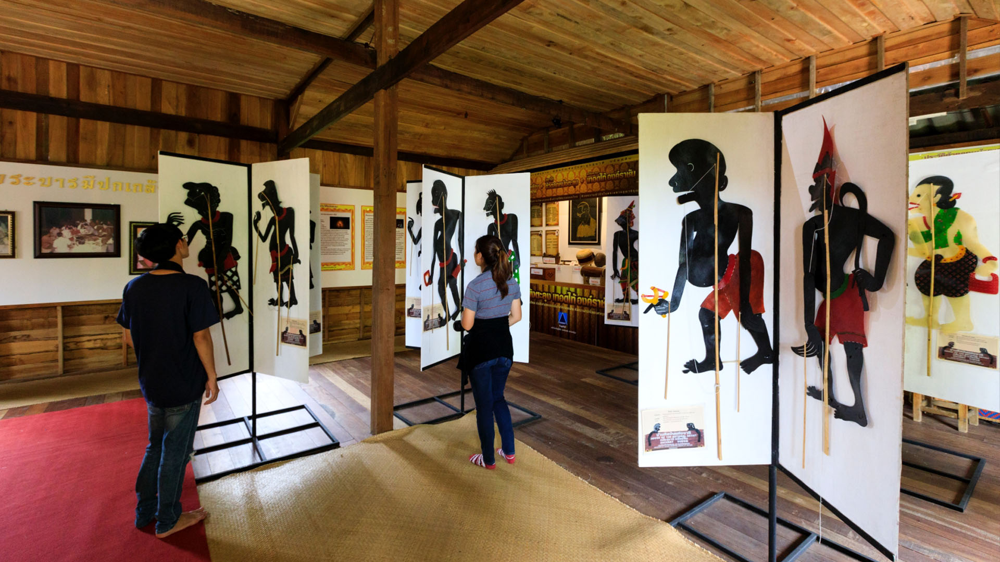

พิพิธภัณฑ์หนังตะลุง
แหล่งเรียนรู้ศิลปะการแสดงพื้นบ้านที่ก่อตั้งโดยศิลปินแห่งชาติ สุชาติ ทรัพย์สิน ภายในจัดแสดงตัวหนังตะลุงจากทั่วโลกและขั้นตอนการแกะสลักอย่างละเอียด ที่นี่ไม่ใช่แค่พิพิธภัณฑ์ แต่เป็นศูนย์กลางการสืบสานจิตวิญญาณ ของชาวใต้ มีการสาธิตการเชิดหนังตะลุงและการทำตัวหนังให้ชมอย่างใกล้ชิด